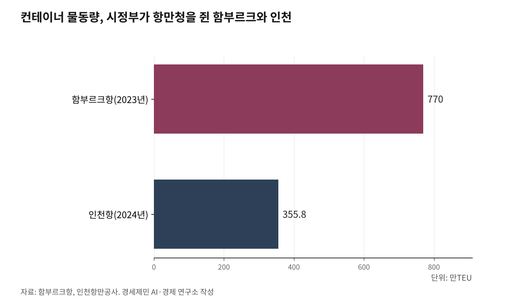

[인천 해양산업, 생존의 기로㉔] 6.3 선거 일주일 앞, 인천 해양 자치권 시험대
제주는 이양받고 인천은 일반 광역시·국가 관리 무역항 이중 사각지대
시의회 결의안과 항만법 개정안, 균형 네트워크 용역 올 하반기 만난다
스마트 오토밸리 표류, 해수청·IPA·인천시 3원 분할이 만든 권한 공백
1. 인천항은 인천 것이 아니다
인천항 권한은 인천에 없다. 항만시설 공사 인허가와 공유수면 매립·사용 허가, 준설토 투기 같은 항만 개발·운영 핵심 권한은 해양수산부와 인천지방해양수산청이 쥐고 있다. 인천항만공사가 부두를 임대·운영하지만 관리·감독권은 해수부 소관이다.
인천시는 도시계획 권한만 가졌다. 한 항만을 두고 세 기관이 권한을 나눠 쥔 구조다. 박창호 인천시의원(국민의힘 비례)이 결의안 제안 이유에서 짚은 진단이 이 구조를 정리한다.
"항만 개발과 운영, 배후 교통과 물류, 안전·환경, 지역 산업정책이 한 그림으로 조정되기 어렵다."
인천시의회 건설교통위원회는 박 의원이 대표 발의한 '인천지방해양수산청 및 인천항만공사 관리·감독권 등 단계적 이관 촉구 결의안'을 1월 30일 원안가결했다. 시의회는 2월 12일 제306회 임시회 본회의에서 결의안을 의결했다.
해양수산부가 부산으로 이전한 지 다섯 달이 지났고 6월 3일 지방선거가 일주일 앞이다. 그 사이 인천 해양 자치권 의제는 결의안 한 건과 항만법 개정안 발의 예정으로 출발선에 섰다.

2. 결의안과 항만법 개정안, 균형 네트워크 용역
결의안 핵심은 셋이다. 첫째, 인천해수청 기능 중 지방정부가 이관받을 수 있는 범위를 명확히 정하고 단계적 이관 로드맵을 수립해 이행한다. 둘째, 인천항만공사 관리·감독권과 주요 기능을 인천시로 단계적으로 이관해 지방정부 중심 통합 거버넌스를 만든다.
셋째, 법령·하위규정 정비와 함께 재정·인력·정보·시스템을 동반 이양하고 중앙·지방 역할 분담·조정 체계를 마련한다. 인천시의회는 본회의 의결 뒤 결의안을 대통령실·국회·정부부처·국무조정실에 전달했다.
인천 지역 여·야 국회의원은 인천시와 협의해 올 상반기 항만법 개정안을 공동 발의할 예정이다. 개정안 이양 대상은 항만시설 공사 인허가, 공유수면 매립·사용 허가, 준설토 투기다. 정부가 제주·세종 특별자치시도에만 부여한 특례를 해양 분야에 한정해 일반 광역시 인천에도 적용하는 방식이다.
이한남 인천시 해양항공국장은 경인방송 인터뷰에서 "해수부는 2022년부터 국가 항만 개발권이 중앙정부 고유 권한이라는 의견을 이어와 법률 개정이 우선돼야 한다"며 "항만법 개정안 외 올 12월 제정 예정인 지방일괄이양법에도 관련 사무가 포함될 수 있게 최선을 다하겠다"고 했다.
해양수산부는 4월 20일 '부산 이전에 따른 지역 밀착 및 전국 균형 네트워크 구축 전략 연구용역'을 긴급 발주했다. 사업금액 7000만원, 사업기간 계약일부터 6개월이다. 5개 과업 중 과업 4는 전국 11개 지방해양수산청 조직·기능·권한 적정성 검토를 명시했다.
결의안과 항만법 개정안, 균형 네트워크 용역, 지방일괄이양법이 올 하반기에 만난다.
3. 제주는 이양받았는데 인천은 이중 사각지대
권한 이양의 길은 이미 있다. 제주특별자치도는 2006년 7월 1일 출범과 함께 제주지방해양수산청 권한 가운데 해상운송과 보안을 제외한 대부분을 이양받았다. 항만개발과 어항관리, 해양환경보전과 수산자원관리가 지자체로 넘어갔다.
2023년 기준 제주도가 정부로부터 이양받은 권한은 누적 3839건이다. 국회는 2023년 6월 9일 '지방자치분권 및 지역균형발전에 관한 특별법'을 만들었다. 이 법은 해양수산청 같은 중앙정부 산하 지역기관을 정비하고 지자체가 역할을 맡게 해야 한다는 특별지방행정기관 정비 조항을 담았다.
인천은 이중 사각지대다. 첫째, 인천은 일반 광역시다. 특별자치시도가 아니어서 제주·세종 같은 특례 이양 대상이 아니다.
둘째, 인천항은 항만법상 '국가 관리 무역항'이다. 정부가 지방일괄이양법 시행으로 해수부 소관 항만 사무를 지방관리 무역항과 연안항 중심으로 지자체에 이양하는데 국가 관리 무역항은 여기서 빠진다. 박 의원은 경인방송 인터뷰에서 "특별시만 이양되고 일반 시·도는 안 되는 건 형평성에 어긋난다"고 했다.
해외 항만 모델은 다르다. 함부르크 시정부는 2005년 함부르크 항만청(Hamburg Port Authority, HPA)을 산하 기관으로 세워 항만 인프라 계획·구축, 항만철도 시설 관리, 선박 교통 안전 권한을 직접 행사한다. 함부르크항 컨테이너 물동량은 2023년 770만TEU(Twenty-foot Equivalent Unit, 20피트 컨테이너 기준)다.
로테르담항은 2004년 시정부 부서에서 공기업으로 전환했다. 로테르담시가 약 70%, 네덜란드 정부가 약 30% 지분을 가졌다.
4. 권한 공백이 만든 표류, 스마트 오토밸리
권한이 갈라진 자리에서 사업이 표류한다. 인천남항 배후부지 39만8155㎡에 총사업비 4370억원을 투입해 만드는 스마트 오토밸리는 인천해수청 실시계획 승인, 인천항만공사 부지 임대차, 인천시 도시계획을 세 기관이 나눠 쥔 구조다.
사업자 카마존(주)은 2024년 말까지 자기자본 496억원을 모으겠다고 약속했으나 실패했다. 지난해 6월 인천지방해양수산청에 내야 할 착공계도 내지 못했다.
인천 내항 1·8부두 재개발도 전담 인력 부족과 복잡한 행정 절차로 난항을 겪고 있다. 인천시가 도시계획 권한을 가졌지만 항만시설 공사 인허가와 공유수면 매립 허가는 인천해수청과 인천항만공사 소관이다. 권한이 갈라진 자리에서 결정이 느리고 사업이 멈춘다.
박주봉 인천상공회의소 회장은 인천투데이 인터뷰에서 "인천항은 경인경제권 시민 2600만명의 생활 물류를 책임지는 핵심 거점이고 지역경제 생산 유발액은 연간 38조원에 이르는 것으로 추산된다"며 "균형 잡힌 항만 정책과 기능별 역할 분담이 필요하다"고 했다.
5. 6.3 지방선거 일주일 앞, 인천 정치는 무엇을 약속하나
분권의 핵심은 권한 이양이지 부처 이전이 아니다. 노무현 정부가 공공기관 175개를 지방으로 옮긴 지 20년이 지났지만 경인경제권 인구 비중은 2000년 46.3%에서 2023년 50.4%로 늘었다. 분산은 분권이 아니었다.
이재명 정부가 해수부를 세종에서 부산으로 옮긴 것도 같은 구도다. 해양·수산·항만 권한이 부산으로 모였다. 인천이 결의안과 항만법 개정안으로 요구한 것은 이 집중에 맞서는 분권, 즉 지방해양수산청과 항만공사 관리·감독권의 지자체 이양이다.
부산은 해수부 이전과 함께 부산 영도구 동삼혁신지구에 총사업비 322억원을 들여 해양과학기술 산학연 협력센터를 지난해 말 준공했고 올 7월 개관한다. 올 1월 부산항만공사는 '부산항 인공지능(AI, Artificial Intelligence) 대전환의 원년'을 선포했다. 부산시는 경제성장 혁신전략으로 4조8882억원 규모 사업 71개를 추진한다.
해수부 2026년도 항만 인프라 확충 예산 1조6600억원 가운데 부산지역이 5382억원, 인천지역이 920억원이다. 6배 격차다.
6월 3일 지방선거를 일주일 앞두고 인천시장 선거는 3파전이다. 유정복 후보(국민의힘)는 5월 14일 인천항 국제여객터미널에서 인천항발전협의회와 간담회를 열고 항만 자치권과 규제 개선을 의제로 다뤘다. 박찬대 후보(더불어민주당)는 5월 6일 인천항 국제여객터미널에서 해상풍력 6대 전략을 발표했고 5월 11일 인천신항에서 인천항 남북협력 거점 항만 지정과 항만 인공지능 전환을 공약으로 내걸었다.
박 후보는 박찬대(연수갑) 의원이다. 이재명 대통령이 대선 운동 기간 해수부 부산 이전 공약을 내세웠을 때부터 침묵해 인천 시민사회가 비판해온 민주당 인천 국회의원 11명 중 1명이다. 박 후보는 4월 14일 신임 해수부 장관과 간담회를 갖고 '인천 소외론' 우려를 전달했다. 이기붕 후보(개혁신당)도 등록했다.
인천 해양 자치권 의제는 결의안과 법 개정 흐름을 누가 끌고 갈지, 또는 중앙정부 협의·지원 요청에 머물지 갈림길에 있다. 결의안과 법 개정, 균형 네트워크 용역 결과가 올 하반기에 만난다. 이 흐름이 인천 해양 자치권의 출발선이 될지, 또 한 번의 선언으로 그칠지 6월 3일 인천 시민이 결정한다.
※ 이 기사는 AI 프로그램 클로드를 활용해 작성했습니다.
참고문헌
·인천시의회 건설교통위원회(2026), "인천지방해양수산청 및 인천항만공사 관리·감독권 등 단계적 이관 촉구 결의안", 제306회 임시회, 2026.01.30. 원안가결, 2026.02.12. 본회의 가결. https://www.icouncil.go.kr
·해양수산부(2026), "해양수산부 부산 이전에 따른 지역 밀착 및 전국 균형 네트워크 구축 전략 연구(긴급공고)", 해양수산부 공고 제2026-854호, 나라장터 입찰공고번호 R26BK01475940-000, 2026.04.20. https://www.g2b.go.kr
·경인방송(2026), "인천항은 인천 것이 아니다…10월 관리권 이양 추진", 『경인방송』, 2026.02.04. https://news.ifm.kr/news/articleView.html?idxno=464075
·김도윤(2025), "박주봉 인천상의 회장 인천항 국가 물류체계 거점…균형 있는 항만 정책 필요", 『인천투데이』, 2025.07.07. https://www.incheontoday.com
·이종선(2025), "부산항 5400억 vs 인천항 920억…해수부 이전 예산 쏠림 심각", 『인천투데이』, 2025.09.03. https://www.incheontoday.com/news/articleView.html?idxno=307720
사진 출처
· [대표사진] 서울역사아카이브, "대통령직선제 개헌 찬반 국민투표.jpg", 위키미디어 공용, 공공누리 제1유형, https://commons.wikimedia.org/wiki/File:%EB%8C%80%ED%86%B5%EB%A0%B9%EC%A7%81%EC%84%A0%EC%A0%9C_%EA%B0%9C%ED%97%8C_%EC%B0%AC%EB%B0%98_%EA%B5%AD%EB%AF%BC%ED%88%AC%ED%91%9C.jpg
※ 이 기사는 인공지능을 활용해 작성했습니다.
관련기사
- [인천 해양산업, 생존의 기로㉕·終] 2026년 가을 해수부 균형 네트워크 용역 결과 발표
- [인천해양산업, 생존기로㉓] 인천항 크루즈 1월 64항차서 3월 133항차, 모항 도시 전환 갈림길
- 부산엔 스마트양식 1950억·어시장 2422억, 인천엔 데이터 거점도 없다
- [인천해양산업, 생존기로㉑] 부산항 7부두 포트 4.0, 인천항도 피할 수 없다
저작권자 © AI경세제민 무단전재 및 재배포, AI학습 및 활용 금지